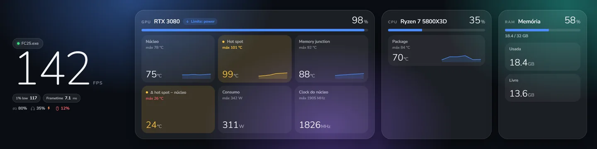
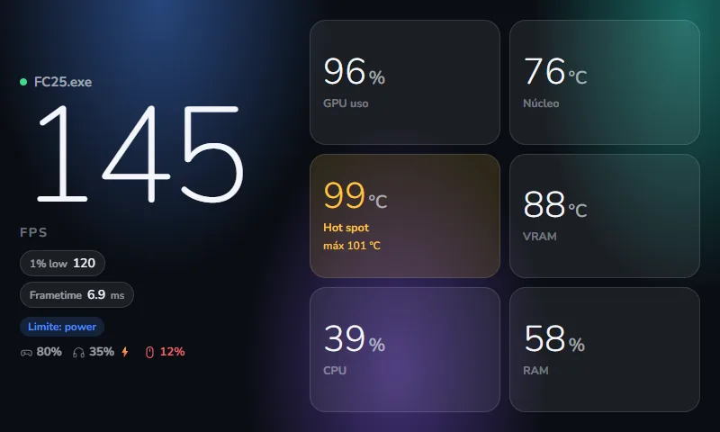
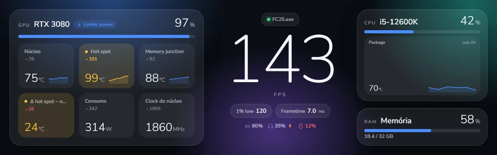
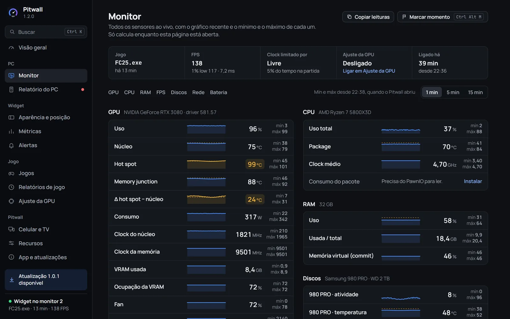
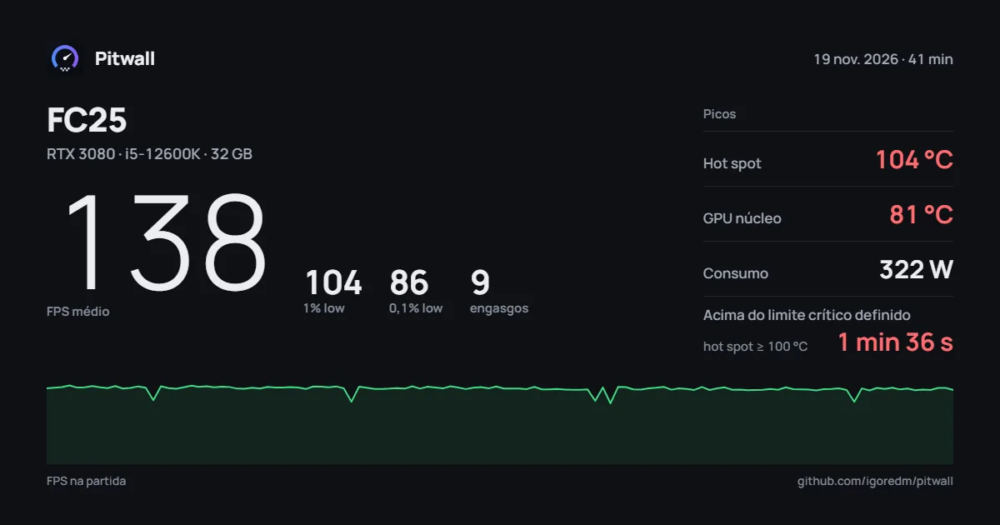
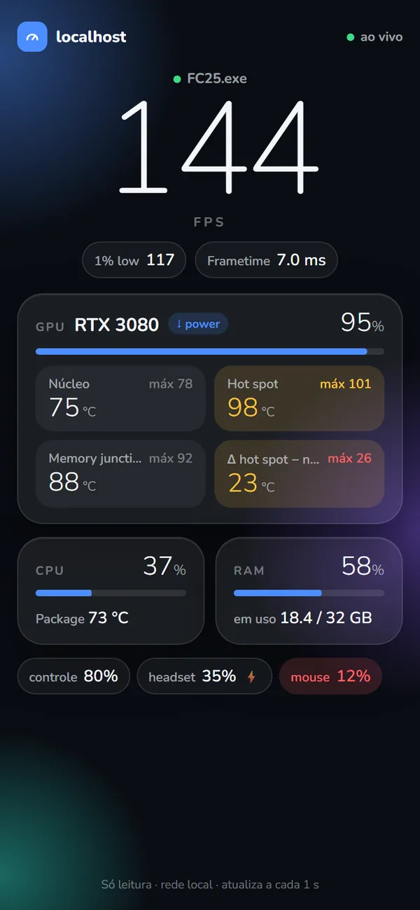
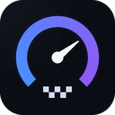

Um layout para cada tela
Completo, médio e compacto, mais a faixa para telas em barra como o Corsair Xeneon Edge e o mini para telinhas de 5 a 8 polegadas. No automático, o widget escolhe pelo tamanho da janela.


O Pitwall é um widget para Windows que fica fora do jogo: sem overlay, sem DLL injetada, nada para o anti-cheat estranhar. FPS e 1% low pelo PresentMon, hot spot da GPU, clocks, consumo, RAM e a bateria do mouse e do headset.
Grátis e código aberto (MIT) · v1.2.1 · Windows 10 e 11

O Windows já registra cada quadro que o jogo apresenta, com eventos ETW. O PresentMon, da Intel, lê esses eventos de fora do processo, e o Pitwall só desenha os números num monitor que o jogo nem sabe que existe. Sem gancho no DirectX, sem ler a memória do jogo.
É o widget de verdade, o mesmo código do app, rodando aqui com dados de exemplo. Troque o tema, o tamanho da tela e a situação, e veja o que muda.
As configurações também são o lugar de entender o PC: tudo ao vivo, o que aconteceu antes de uma queda e cada partida em detalhe. Clique à vontade, é a tela do app com dados de exemplo.
Para a hora em que algo parece estranho: cada sensor com gráfico, mínimo e máximo, e o motivo quando um deles não tem leitura (falta o PawnIO, o disco não informa, a placa não expõe).

Completo, médio e compacto, mais a faixa para telas em barra como o Corsair Xeneon Edge e o mini para telinhas de 5 a 8 polegadas. No automático, o widget escolhe pelo tamanho da janela.


Qualquer partida vira um PNG de 1200 × 630 com FPS médio, 1% e 0,1% low, engasgos, picos de temperatura e o tempo acima do limite crítico.

Limite amarelo e vermelho por métrica. Se o valor ficar no vermelho por 10 segundos, vem um aviso do Windows, com intervalo mínimo entre um e outro.
Power limit e clock máximo pela API oficial da NVIDIA, só enquanto o jogo roda, com perfil por jogo. Vem desligado, e nada é gravado na placa.
Mouse, headset e controle no rodapé do widget, com aviso quando a bateria fica baixa.
Um atalho mostra e esconde o widget; outro marca o momento da partida para você achar depois no relatório.
Uma API local, só leitura e com token, para levar FPS e temperaturas ao seu painel.
Cada sessão de jogo grava um CSV com todas as métricas. Os antigos saem sozinhos depois de 30 dias ou 500 MB, ou do limite que você escolher.
Ligue a visualização na rede local, abra o endereço no celular ou na TV e digite o código de 6 dígitos. Fica na sua rede, é só leitura e vem desligada. Sem nenhum dos dois, o widget também pode ficar num canto da tela principal.

Ele nunca toca no jogo, e tudo o que roda é código aberto, compilado num CI público do GitHub. O que pode parecer estranho tem explicação:
Os sensores de CPU e placa-mãe (pelo driver assinado PawnIO), a sessão ETW do FPS e o power limit opcional da NVIDIA exigem isso. O início com o Windows usa uma tarefa do Agendador, então o UAC não aparece a cada boot.
O instalador ainda não tem assinatura digital. Na primeira vez, clique em Mais informações → Executar assim mesmo. Cada release traz o SHA-256 em SHA256SUMS.txt, e o atualizador confere esse hash antes de instalar.
Sem overlay, sem DLL e sem ler a memória do jogo. Nenhum anti-cheat certifica programas de terceiros, mas não há nada no processo do jogo para ele encontrar.
Vem desligado e usa só a API oficial da NVIDIA (NVML). Nada é gravado na placa: os limites voltam ao normal quando o jogo ou o Pitwall fecha, e depois de uma queda, quando o Pitwall abre de novo.
Só a busca por atualização no GitHub, que dá para desligar. Sem telemetria e sem conta. Celular, TV e Home Assistant funcionam só na rede local e vêm desligados.
O relato privado de vulnerabilidade está ativo no GitHub. Veja o SECURITY.md.

Um instalador só. O PresentMon vem junto; o PawnIO e o WebView2 Runtime são instalados se faltarem. Na primeira vez, um assistente ajuda a escolher o monitor e o tema.
Ainda sem assinatura digital: o SmartScreen pode avisar na primeira vez.
Não achou a sua? Abra uma issue no GitHub.
Sim. O código é MIT e está no GitHub. Não tem versão paga, conta nem anúncio.
Para monitorar, sim, e sem overlay. Para overclock com curva de voltagem, não: o Pitwall só ajusta o power limit e o clock máximo das placas NVIDIA.
O monitoramento funciona com o que o LibreHardwareMonitor lê da placa. O ajuste de power limit e clock usa a API da NVIDIA, então só aparece em placas NVIDIA.
A NVIDIA tirou essa leitura das RTX 50. No lugar do número, o Pitwall mostra o motivo.
Ajuda, mas não é obrigatório. Dá para usar o celular, a TV ou deixar o widget num canto da tela principal.
Ele é usado todo dia com o EA FC. Como o FPS vem do Windows e não do jogo, funciona do mesmo jeito em DirectX, Vulkan e OpenGL. Se um jogo bloquear a leitura, o widget avisa.
Issues, traduções e pull requests no GitHub. O CONTRIBUTING.md explica como compilar.